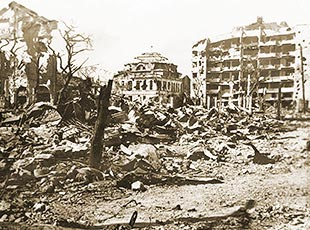

|
j
a v a s c r i p t |
Pg.1/9
March 22, 1945
After a "city-wide wave of protest," MFP ("Free — Don't Pay for this Paper!") resumed publication, and it's full of news: Page 1: "Most of Panay was cleaned up by guerrillas" — the Japanese didn't dare put too many soldiers there in the first place. At Iloilo the docks were saved and the harbor found clear, though 70% of the city was destroyed early in 1942. Guerrillas under Colonel Macario Peralta Jr. cleared the inlands and MacArthur awarded him the Distinguished Service Cross. PLN: "Secretary Confesor holds three job successfully." (My emphasis — how do they know?) He's now "the most powerful" man in the Osmeña Cabinet: Secretary of the Interior, Acting President of the Cabinet and Acting Mayor of Manila.
Jeanne & Arthur
Orchids to Larry Wiltzius, who brought us a gallon of Selecta tonight and stayed to provide us with good company. He brought news that a cruiser would arrive in two or three weeks to provide Manila with electricity. Larry mentioned the scandal about MacArthur's three million dollar Hollandia home. Situated atop a hill, the road alone cost a cool million. An embarrassed MacArthur was not to blame; in fact he chopped some GHQ heads off himself. Incidentally, Larry was able to install air conditioning in at least two second-floor bedrooms of the White House. While on the subject of our neighbor, MacArthur's wife Jeanne, son Arthur and physician are also living next door. A Chinese amah looks after the kid, though Jeanne's aide — a major — will take over because "it's time the kid got less pampering and more discipline." This afternoon, the family took a walk in their garden. Meanwhile, MPs continue to clean up our lawn and the fence. With the bougainvillea that's been sitting on our fence for 25 years now gone, we have a perfect view of their pool. "Just dive in and tell 'em you stumbled," suggests Maurice. . . . .

San Luis Terraces
Biked to Pasay and back through Ermita, marveling how anyone could have survived the destruction in San Luis and Isaac Peral. The answer is that survivors moved to the larger concrete buildings such as the San Luis Terraces and the Peralta Apartments. The former is gone while the latter is housing American officers while repairs go on. The Bay View Hotel, one of the imposing landmarks fronting Manila Bay, can't be salvaged. The U.S. High Commissioner's Palace is also a mess. A lonely sentry stands guard at the gate of the empty premises. |
|
|
|
|